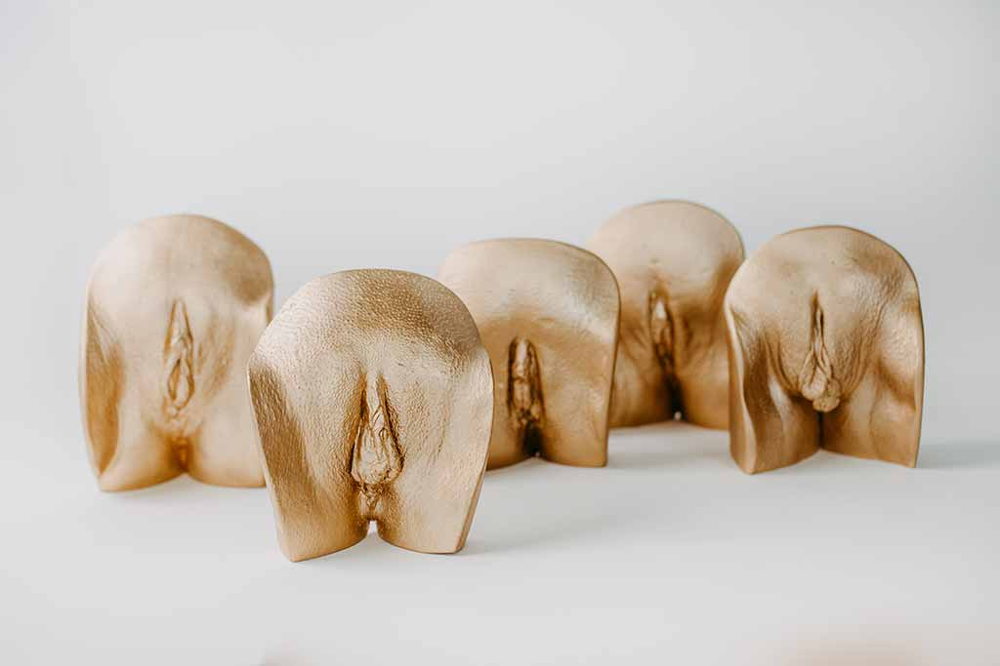
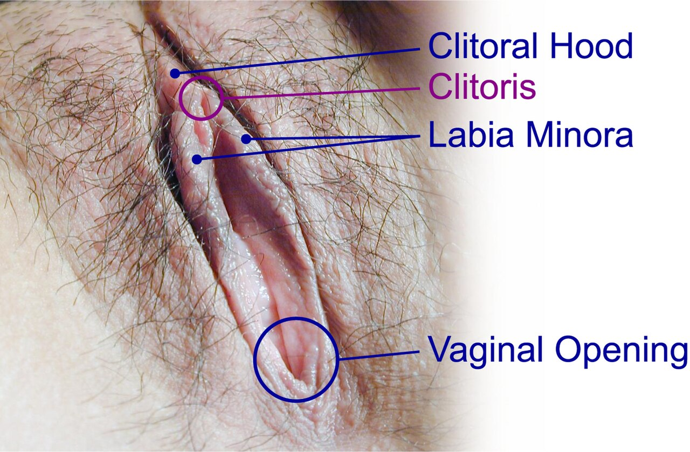
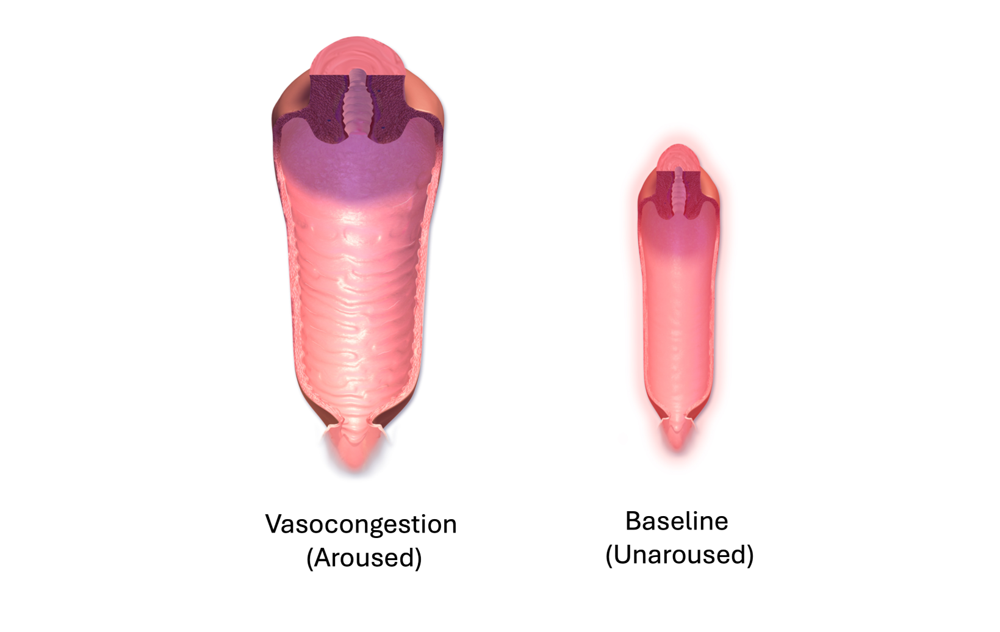
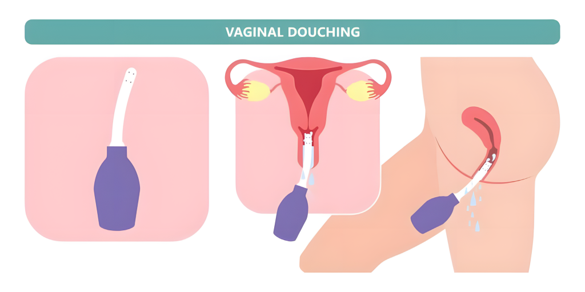
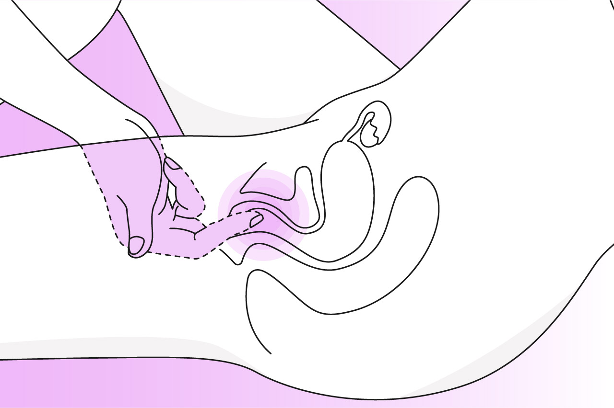
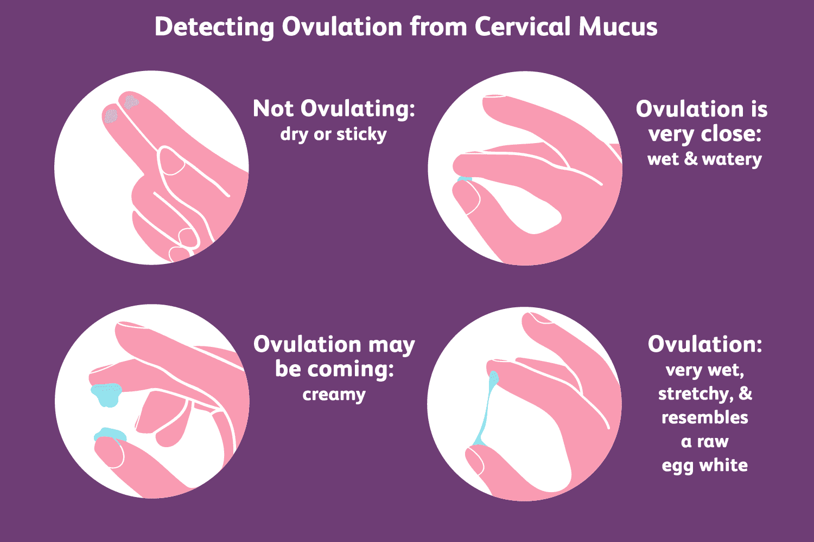
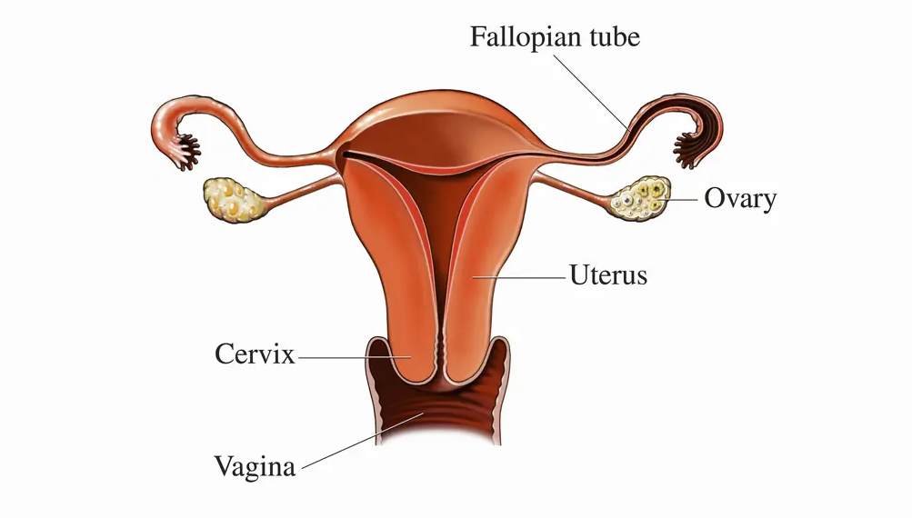
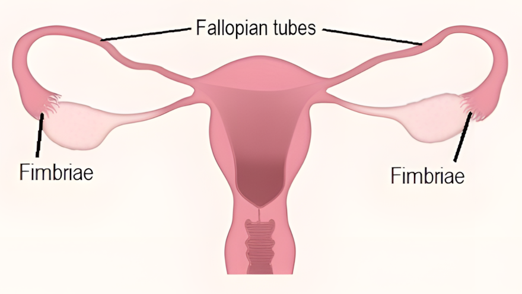
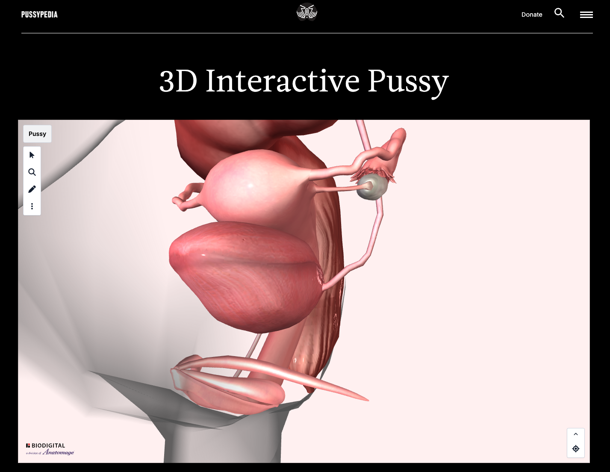

Female Sexual Anatomy and Physiology
A guide to the external and internal structures of female reproductive anatomy, their functions, and their role in sexual health.

If you have a vagina, take a moment to think: when was the last time you actually looked at your own genitals with a mirror? For many people with vulvas, the honest answer is never. In a survey of college-aged women, only about a quarter reported having ever examined their own vulva closely, and many described feeling unfamiliar with what they would even be looking at (Schick et al., 2010)ReferenceSchick, V. R., Calabrese, S. K., Rima, B. N., & Zucker, A. N. (2010). Genital appearance dissatisfaction: Implications for women's genital image self-consciousness, sexual esteem, sexual satisfaction, and sexual risk. Psychology of Women Quarterly, 34(3), 394–404.. Compare that to how well most people know their own face, hands, or the moles on their arms. Why are so many women unfamiliar with an essential part of their anatomy?
This matters for more than curiosity. Research consistently links positive genital self-imageGenital Self-ImageA person's feelings about the appearance and function of their own genitals. Positive genital self-image is linked to better sexual outcomes, including higher rates of orgasm and improved communication with sexual partners.View in glossary → with better sexual outcomes. Women who feel more comfortable with the appearance of their genitals report higher rates of orgasm, more satisfying sexual experiences, and better communication with sexual partners about what feels good (Herbenick et al., 2011; Berman et al., 2003)ReferencesHerbenick, D., et al. (2011). The Female Genital Self-Image Scale (FGSIS): Results from a nationally representative probability sample of women in the United States. The Journal of Sexual Medicine, 8(1), 158–166. | Berman, L., et al. (2003). Genital self-image as a component of sexual health. Journal of Sex & Marital Therapy, 29(Suppl. 1), 11–21.. Knowing your body also has practical health benefits. People who are familiar with how their own anatomy looks and feels are more likely to notice early changes that signal infection, hormonal shifts, or even cancer.

Healthcare providers often assume that adult patients understand the basics of their own anatomy. However, many adult patients do not possess this "basic" knowledge. Studies of sex education in the United States show that even in classrooms where reproduction is discussed, the external female anatomy — the clitoris in particular — is rarely covered in any meaningful way (Hall et al., 2016)ReferenceHall, K. S., Sales, J. M., Komro, K. A., & Santelli, J. (2016). The state of sex education in the United States. Journal of Adolescent Health, 58(6), 595–597.. This chapter is designed to close that gap with clear, accurate information.
One note on language before we begin. In this chapter, "female" refers to people born with female reproductive anatomy (vulva, vagina, ovaries). This does not always align with gender identity. Issues related to transgender and intersex individuals are covered further in another chapter.
Research shows that women who report a more positive genital self-image tend to experience which of the following?
2.1 External Anatomy
The Vulva
The external female genitalia, referred to collectively as the vulvaVulvaThe collective term for the external female genital structures, including the labia, mons pubis, clitoris, and the area around the vaginal opening.View in glossary →, include all the genital structures on the outside of the body. A common mistake is to call this whole area the vagina, but the vagina is actually a separate, internal structure. There is wide diversity in how vulvas look, due to natural differences in size, color, and proportion. Each year, one of the most common health questions women Google is, "What does a normal vagina/vulva look like?" What a "normal vulva" looks like is impossible to answer, because vulvas are highly variable between female bodies.

For more information on what is "normal" when it comes to the vulva, visit: womenshealthaz.com — Vulva & Vagina: What's Normal, What's Not.
The Labia
The labia are two pairs of skin folds that surround the rest of the vulva. The outer labia (labia majora) are filled mostly with fatty tissue and grow hair on the surface after puberty. The inner labia (labia minora) are thin and hairless. For some people, the inner labia are only visible once the outer labia are parted. The skin on the outer labia tends to be a bit darker than surrounding skin and is generally less sensitive to touch. The inner labia contain more glands, blood vessels, and nerve endings, which makes them more sensitive to touch.
Inner labia vary a lot in length from person to person. In some people they are barely visible; in others they extend well past the outer labia. All of these variations are normal. In recent years, however, a cosmetic surgery called labiaplastyLabiaplastyA cosmetic surgery that shortens the inner labia. The procedure is medically unnecessary and carries the usual surgical risks of infection, scarring, and changes in sensation.View in glossary → has become more common. Labiaplasty is a medically unnecessary procedure that shortens the inner labia. Researchers studying the rise in labiaplasty have linked the trend to limited exposure to realistic images of female anatomy, especially in pornography and media advertising (Mackenzie, 2017)ReferenceMackenzie, J. (2017, July 3). Vagina surgery "sought by girls as young as nine." BBC News. https://www.bbc.com/news/health-40410459. The procedure carries the usual risks of surgery, including infection, scarring, and changes in sensation.

The Mons Pubis
Sitting above the labia is the mons pubis, a soft mound covered by a thin layer of fat that provides cushioning during sex. After puberty, the mons is covered with pubic hair, which appears on the genitalia of all sexes during this stage of development. Scientists believe pubic hair traps bacteria and helps prevent it from entering the vaginal opening, and there is some evidence it also helps spread pheromones — chemical signals released by mammals that may play a role in attraction.
Pubic hair grooming is extremely common in the United States. A widely cited study published in JAMA Dermatology found that 84% of women reported some form of pubic hair grooming, and about 62% reported full removal at least some of the time (Rowen et al., 2016)ReferenceRowen, T. S., et al. (2016). Pubic hair grooming prevalence and motivation among women in the United States. JAMA Dermatology, 152(10), 1106–1113.. Younger women, especially those between 18 and 34, were the most likely to remove all of their pubic hair. From a medical standpoint, there is nothing harmful about removing pubic hair as long as it is done safely. The idea that removal makes a person cleaner or more hygienic, however, is not medically supported. In addition, removing pubic hair can cause increased irritation and risk of infection due to losing the protective effects of hair in the pubic area (Eltobgy et al., 2024)ReferenceEltobgy, A., et al. (2024). Effects of pubic hair grooming on women's sexual health: A systematic review and meta-analysis. BMC Women's Health, 24, 171..
The Clitoris
The clitoris is the only structure in the human body whose sole known purpose is sexual pleasure. That fact alone makes it unusual, and it also helps explain why it was overlooked by the medical community for so long.

The full internal structure of the clitoris was not accurately depicted in mainstream medical textbooks until 1998, when Australian urologist Helen O'Connell published detailed dissection research showing that earlier illustrations had been incomplete or inaccurate (O'Connell et al., 1998; O'Connell et al., 2005)ReferencesO'Connell, H. E., et al. (1998). Anatomical relationship between urethra and clitoris. The Journal of Urology, 159(6), 1892–1897. | O'Connell, H. E., et al. (2005). Anatomy of the clitoris. The Journal of Urology, 174(4 Pt 1), 1189–1195.. For most of medical history, the clitoris was either misrepresented, downplayed, or left out entirely. A frequently quoted figure is that the clitoris contains about 8,000 nerve endings, but more recent autopsy research that actually counted nerve fibers suggests the true number may be as high as 10,000 (Peters et al., 2022)ReferencePeters, B. R., et al. (2022). Comparative quantification of the dorsal nerve of the clitoris [Conference presentation]. Sexual Medicine Society of North America Fall 2022 Annual Meeting, Miami, FL, United States..
The clitoris is mostly hidden from view. The small bump you can see at the top of the vulva, called the clitoral glans, is only the tip. Think of an iceberg, with the visible part being just a fraction of the whole structure. Tuck a finger behind the glans and you can feel the clitoral shaft, which runs up under the clitoral hood. From there, the clitoris splits into two long branches called the crura (about three inches each) that curve down and wrap around the urethra and vaginal canal like a wishbone. Below the crura sit two vestibular bulbs, which fill with blood during arousal and help the vagina lengthen and tighten. The clitoris you see in a mirror is basically the doorbell on a much larger house.

Stimulation of the clitoris is the most common pathway to orgasm for people with vulvas. The glans is the most sensitive part, and during sexual arousal both the glans and the internal structures fill with blood and become engorged, similar to how a penis becomes erect. After orgasm, the clitoris often becomes too sensitive for continued direct touch, which is normal.
Why was the full internal structure of the clitoris not accurately depicted in mainstream medical textbooks until 1998?
The Vagina
Contrary to popular belief, the vagina is not actually an open tunnel. At rest, the walls touch each other, more like a deflated balloon than a hallway. It is the internal canal that connects the vulva to the uterus, and it has a few important jobs: it is the birth canal, the pathway sperm travel toward an egg, and the channel that menstrual blood exits through. It is also remarkably flexible. In its resting state it is only about 3 to 4 inches deep (roughly the length of a tampon). During sexual arousal, the walls separate and the canal lengthens to allow for penile penetration. During childbirth, it stretches dramatically enough to let a baby pass through.

The Vaginal Opening and Surrounding Structures
The entry point to the vagina is the vaginal introitus, also called the vaginal opening. The introitus is partly covered by the labia and sometimes by the hymen, a thin membrane that surrounds the opening of the vagina.
Hymens come in many shapes and sizes. Almost all have at least one opening that allows menstrual blood to pass through. In rare cases, a person is born with an imperforate hymen, which completely covers the opening and needs to be opened surgically around puberty. There is an old myth that the hymen can show whether a woman has had sex or not. In reality, hymens typically stretch rather than fully tear during sex, often leaving the membrane partly intact. The hymen also naturally thins over time, so most adults (females age 18+) have a hymen that is barely noticeable, regardless of whether they have had sex.
Just above the vaginal opening is the urethra, a small opening through which urine exits the body. The urethra is short and sits close to the vaginal opening, which is why urinary tract infections (UTIs) are more common in females than in males. UTIs occur when bacteria, most often E. coli, get into the urethra and bladder, causing painful and frequent urination. UTIs can be triggered by prolonged or frequent intercourse (sometimes called honeymoon cystitis), by certain spermicides, and by anal-to-vaginal contact during sex. It is also essential that women wipe "front-to-back" after using the restroom, so that bacteria do not come into contact with the vagina or urethra.
Two small glands called the Bartholin's glands sit on either side of the vaginal opening. They release small amounts of alkaline fluid just before orgasm. The primary function of this fluid is to lubricate the outer vagina during sex (Quaresma & Sparzak, 2024)ReferenceQuaresma, C., & Sparzak, P. B. (2024). Anatomy, abdomen and pelvis: Bartholin gland. In StatPearls. StatPearls Publishing..

There are also the paraurethral glands, also known as Skene's glands, which are located near the urethra. They release about a quarter-cup of vaginal fluid during orgasm, which is used to rinse left-over traces of urine away from the vagina. Urine is quite acidic and can harm sperm, so this is essential for keeping sperm alive. In some women, this gland can "squirt" outward, causing outer female ejaculation (commonly called "squirting"). This is a fairly common occurrence, with 75% of women reporting this has happened to them at least once, and 20% reporting it as a regular occurrence during sex (Hensel et al., 2024)ReferenceHensel, D. J., von Hippel, C. D., Lapage, C. C., & Perkins, R. H. (2024). Vaginal squirting: Experiences, discoveries, and strategies in a U.S. probability sample of women ages 18–93. Journal of Sex Research, 61(4), 529–539.. There is nothing dangerous or unhealthy about squirting. One common myth is that squirting is "peeing" during sex, but sexual arousal actually causes muscles around the bladder to tighten, making it virtually impossible to release urine during orgasm.
The Vaginal Canal
Imagine the vaginal wall like a wetsuit with three layers stacked on top of each other. The innermost layer is a thin lining called the mucosa, which sweats out lubrication during sexual arousal. The middle layer is muscular and contracts during sex, hugging whatever is inside. The outer layer is tough and elastic, holding the whole structure together.

During arousal, all three layers fill with blood in a process called vasocongestionVasocongestionThe process in which blood fills the tissues of the vagina (and other genital structures) during sexual arousal, causing them to swell, lengthen, and become more sensitive.View in glossary →, which makes the vagina swell, lengthen, and become more sensitive. One detail worth knowing: the outer third of the vagina (the part closest to the opening) has the bulk of the nerve endings and blood vessels, which is why it tends to be far more sensitive than the deeper portion. This is why penetration depth matters less for pleasure than many people assume.

The vagina has its own microbiome. Just as the gut contains trillions of bacteria that help with digestion, the vagina contains millions of beneficial bacteria, primarily species of Lactobacillus, that help maintain a slightly acidic pH. This acidic environment makes it hard for harmful bacteria and fungi to grow (Ma et al., 2012)ReferenceMa, B., Forney, L. J., & Ravel, J. (2012). The vaginal microbiome: Rethinking health and diseases. Annual Review of Microbiology, 66, 371–389.. The vagina is essentially a self-cleaning system, similar in concept to a self-cleaning oven, in that it manages its own balance through regular discharge that changes in color and texture throughout the menstrual cycle.
Because the vagina is self-cleaning, douchingDouchingThe practice of rinsing the vagina with water or other liquids. Because the vagina is self-cleaning, douching is unnecessary and can disrupt the natural pH balance, increasing the risk of infection.View in glossary → — which involves rinsing the vagina with water or other liquids — is unnecessary and can actually be harmful. Douching can disrupt the pH balance and allow naturally present microbes to overgrow. One common result is an overgrowth of the fungus Candida albicans, which causes a yeast infection, known medically as candidiasis. Yeast infections produce itching, irritation, and a thick whitish discharge. They are treatable with antifungal medication and are not dangerous, though repeated infections can sometimes signal an underlying issue. Other factors that can throw off vaginal pH include stress, hormonal changes from pregnancy or birth control, diabetes, and antibiotic use (Cottrell, 2003)ReferenceCottrell, B. H. (2003). Vaginal douching. Journal of Obstetric, Gynecologic, & Neonatal Nursing, 32(1), 12–18..

The G-Spot
Few topics in female sexual anatomy generate as much debate as the Gräfenberg spot (G-spot)Gräfenberg Spot (G-Spot)An area on the front wall of the vagina, about two inches inside, that some people report is highly sensitive to stimulation. Whether the G-spot is a distinct anatomical structure or simply part of the internal clitoris is debated among researchers.View in glossary →. First described by sexologist Ernst Gräfenberg in the 1950s, the G-spot is said to be located about two inches inside the vagina on the front wall, in the direction of the abdomen. People who report finding it describe the area as feeling slightly more textured or ridged than the surrounding tissue, and many report that stimulation produces intense pleasure or particularly strong orgasms.

The scientific debate centers on whether the G-spot is a distinct anatomical structure or simply an internal extension of the clitoris. Some researchers, using ultrasound and dissection, have argued for a discrete structure (Buisson et al., 2010)ReferenceBuisson, O., Foldes, P., Jannini, E., & Mimoun, S. (2010). Coitus as revealed by ultrasound in one volunteer couple. The Journal of Sexual Medicine, 7(8), 2750–2754.. Others, after reviewing the available evidence, have concluded that no separate anatomical entity can be reliably identified and that the sensations associated with G-spot stimulation may come from underlying clitoral tissue and surrounding glands (Kilchevsky et al., 2012)ReferenceKilchevsky, A., Vardi, Y., Lowenstein, L., & Gruenwald, I. (2012). Is the female G-spot truly a distinct anatomic entity? The Journal of Sexual Medicine, 9(3), 719–726.. The paraurethral (Skene's) glands behind the front wall of the vagina are anatomically similar to the male prostate, which may also underlie the extra sensitivity of the G-spot.
The honest answer about the G-spot is that researchers genuinely disagree. What is clear is that the area is rich in nerves and connective tissue and that stimulation there can be pleasurable for some people, with around 70% of women reporting greater sensitivity in this area of the vagina (Vieira-Baptista et al., 2021)ReferenceVieira-Baptista, P., et al. (2021). G-spot: Fact or fiction? A systematic review. Sexual Medicine, 9(5), 100435.. What is not clear is whether the G-spot deserves to be classified as a separate anatomical structure or is simply part of the vagina.
The scientific debate about the G-spot centers primarily on which question?
The Pelvic Floor
Beneath the vulva and connected to the deeper parts of the clitoris is a set of muscles known as the pelvic floor. These muscles support the bladder, uterus, and other pelvic organs. The most important of these for sexual function is the pubococcygeus (PC) muscle, which contracts steadily during sex and helps stiffen the vaginal walls during arousal. During orgasm, the PC muscle contracts rhythmically, contributing to the sensations of pleasure. It also plays a role in keeping urine in the bladder when it should be there.
Because the PC muscle is so central to both sexual function and urinary continence (controlling the flow of urine), exercises that strengthen it, called Kegel exercisesKegel ExercisesExercises that strengthen the pubococcygeus (PC) muscle by tightening and releasing the same muscle used to stop the flow of urine. Kegels can help with urinary continence and may also increase the intensity of orgasm.View in glossary →, are widely recommended to older women or women who have recently undergone childbirth. To do a Kegel, a person tightens the same muscle used to stop the flow of urine, holds for a few seconds, and releases. They can be done sitting in class, standing in line, or lying in bed, with no one else aware. Research suggests Kegel exercises can also increase the intensity of orgasm (Jorge et al., 2024; Tekbaş, 2025)ReferencesJorge, C. H., et al. (2024). Pelvic floor muscle training as treatment for female sexual dysfunction: A systematic review and meta-analysis. American Journal of Obstetrics and Gynecology, 231(1), 51–66. | Tekbaş, S. (2025). The effect of pelvic floor muscle exercise on sexual function in women of reproductive age: A randomized controlled trial. Medicine, 104(37), e44324..

2.2 Internal Anatomy
The Uterus
If the vagina is a tunnel, the uterus is the room at the end of it. Sitting just above the vagina, it is normally about the size and shape of an upside-down pear, small enough to cup in your hand. During pregnancy, it does something genuinely strange: it expands to roughly 60 times its starting size, going from pear-sized to watermelon-sized over nine months. Almost no other organ can pull off that kind of transformation and then shrink back down again.
Historically, the uterus has been the source of some genuinely strange medical ideas. Ancient Greek physicians believed that the uterus could physically wander around the body, bumping into other organs and causing emotional distress. The word hysteriaHysteriaA historical (and now discredited) diagnosis used in the 19th century to describe women perceived as emotionally disturbed. The word comes from the Greek hystera, meaning uterus, reflecting the ancient belief that the uterus could wander around the body and cause emotional distress.View in glossary → comes from the Greek hystera, meaning uterus, and was used in the 19th century to describe any woman who seemed "emotionally disturbed." The uterus does not, of course, wander around the body, but the history is a useful reminder that what counts as medical knowledge about the female body has changed drastically over time.

The Layers and Position of the Uterus
The uterus is held in place by a ligament that secures it within the abdominal cavity. For most women, the uterus is tilted slightly forward, but in some people it tilts backward toward the spine instead. This variation is known as a retroverted uterusRetroverted Uterus (Tipped Uterus)A variation in which the uterus tilts backward toward the spine rather than forward. It affects roughly 15–20% of women and usually causes no problems.View in glossary →, also called a tipped uterus. It is mostly determined by genetics and affects roughly 15–20% of women. In any large class, a handful of people probably have one without knowing it. In the vast majority of cases, a tipped uterus causes no problems at all. In about 2% of cases, it can make intercourse or childbirth more difficult and may require surgical repositioning (Akturk et al., 2023; Bachar et al., 2025)ReferencesAkturk, E., et al. (2023). Urogynecological symptoms of the retroverted gravid uterus in the first half of the pregnancy. Journal of Surgery and Medicine, 7(1), 54–57. | Bachar, G., et al. (2025). The impact of uterine position on conception modes and perinatal outcomes in nulliparous patients. European Journal of Obstetrics, Gynecology, and Reproductive Biology, 305, 324–328..

Like the vagina, the uterus is built in three layers, each with its own job. The innermost layer, the endometrium, is the lining that thickens each month in preparation for a possible pregnancy and then sheds if no pregnancy occurs — this is what menstruation actually is. The middle layer is the myometrium, a thick muscular wall. The outer layer, the perimetrium, is the wrapper that keeps the uterus protected and separated from the rest of the pelvic cavity.

The myometrium deserves a moment of appreciation. It is one of the most powerful muscles in the human body. During labor, the myometrium contracts strongly and rhythmically to push a baby through the birth canal. While in active labor, it can generate the same amount of force it would take to lift a 3-year-old child off the ground (100–150 newtons) (Hautakangas et al., 2022; Young & Goloman, 2023)ReferencesHautakangas, T., et al. (2022). Impact of obesity on uterine contractile activity during labour. BJOG, 129(10), 1790–1797. | Young, R. C., & Goloman, G. (2023). Assessment of uterine contractions in labor and delivery. American Journal of Obstetrics & Gynecology, 228(5S), S1209–S1221.. The same muscle contracts during orgasm and menstruation, although much less intensely. So when you think about the uterus, think of it less like a passive container and more like an extremely strong athlete waiting for game day.
Which layer of the uterus is responsible for the powerful contractions during labor and delivery?
The Cervix
The bridge between the uterus and the vagina is the cervix, a narrow, neck-like structure with a small opening at its bottom called the cervical os. If a person inserts one or two fingers deeply into the vagina when not aroused, they can typically feel it. It usually feels firm, with a slightly rounded shape, like the tip of your nose. But during ovulation (the fertile window of the menstrual cycle), the cervix changes texture: it becomes much softer and more open, almost like a pair of slightly parted lips. This is one of the body's quieter cues that fertility is high.

The cervical os contains numerous mucous glands that produce different types of mucus depending on where a person is in their cycle. This cervical mucus is slightly acidic most of the time, which helps protect the sterile environment of the uterus. Just before ovulation, however, the glands produce a clear, stretchy, alkaline mucus sometimes called fertile mucus (muscin)Fertile Mucus (Muscin)A clear, stretchy, alkaline mucus produced by the cervical os just before ovulation. Resembling raw egg white in texture, it helps sperm survive and travel quickly into the uterus and oviducts.View in glossary →. This fertile mucus resembles raw egg white in texture and creates conditions that help sperm survive and travel rapidly into the uterus and fallopian tubes. Some people use changes in cervical mucus as one method of timing ovulation, which is useful when trying to get pregnant.

What is fertile mucus (also called muscin), and when does it appear?
The Ovaries and Oviducts
At the top of the uterus, two slender branches called the oviducts (also known as the fallopian tubes) extend outward, each about four inches long. At the end of each tube sits an ovary, an almond-shaped structure roughly 1.5 inches across. The ovaries are gonads, meaning they are sex-hormone-producing reproductive organs — the female counterpart to testes. Despite looking nothing alike on the outside, ovaries and testes do basically the same two jobs: they produce sex cells, and they pump out hormones.

The Ovaries
The ovaries are responsible for two jobs that shape almost every aspect of female reproductive life. First, they store and release ova (egg cells), which is what makes pregnancy possible. Second, they act as small hormone factories, producing estrogen, progesterone, and small amounts of androgens. These hormones do not just regulate the menstrual cycle and pregnancy; they also influence mood, energy, sleep, bone density, and skin. The detailed hormonal sequence of the menstrual cycle is covered in another chapter; this section focuses on the ovaries themselves.
A person is born with their entire lifetime supply of eggs. Unlike males, who continuously produce new sperm throughout adulthood, females do not generate new eggs after birth. The numbers are striking. Even as a newborn, the female body contains its lifetime supply of 1–2 million eggs per ovary. By puberty, only about 300,000 to 400,000 remain. Of those, only around 400 to 500 will actually be released through ovulation across the entire reproductive lifespan (Wallace & Kelsey, 2010)ReferenceWallace, W. H. B., & Kelsey, T. W. (2010). Human ovarian reserve from conception to the menopause. PLoS ONE, 5(1), e8772.. The rest gradually break down and are reabsorbed by the body in a process that continues until menopause. This process of overgenerating eggs, followed by the breakdown of most of them, helps select for the strongest, hardiest eggs for fertilization.
Many people assume the two ovaries take turns ovulating, with the left one going one month and the right one the next. Ovulation actually alternates between the two ovaries randomly. Over time, each ovary ends up ovulating roughly 50% of cycles on average, but the order is unpredictable in any given month.

How does egg production in females differ from sperm production in males?
The Oviducts
The oviducts are the highway between the ovaries and the uterus, and they are surprisingly active. The inner walls are lined with tiny hair-like structures called cilia that beat constantly, working like microscopic brooms sweeping the egg toward the uterus after ovulation. Interestingly, the cilia all sweep in one direction (toward the uterus), but they do not stop sperm from swimming the other way. Traffic in the oviduct, in other words, runs both directions at once.
At the end of each oviduct closest to the ovary is a flared, funnel-shaped opening fringed with finger-like projections called fimbriaeFimbriaeFinger-like projections at the flared end of each oviduct closest to the ovary. The fimbriae sweep a released egg into the oviduct, although they are not actually attached to the ovary.View in glossary →. The fimbriae hover near the ovary but, oddly, are not actually attached to it. When ovulation happens, the egg is released into the open space of the abdominal cavity, and the fimbriae reach out and gently sweep it into the tube. Fertilization, when it happens, almost always occurs inside the oviduct, not in the uterus. From there, the fertilized egg takes a slow several-day trip down the tube before implanting in the uterine lining.

Female Anatomy in 3D: Check out this interactive 3-D diagram of female sexual anatomy at pussypedia.net/interactive-model. You can turn, spin, and zoom over the diagram to see all of the ins-and-outs of the vulva and vagina.

2.3 The Breasts
The breasts, also known as the mammary glands, sit between the skin and the chest muscles, and extend up toward the armpit. Breasts vary enormously in size, shape, density, nipple placement, and color, and almost everyone has noticeable asymmetry between their left and right breast. If you have ever looked in the mirror and thought your breasts do not quite match, you have normal breasts.
Internal Structure
Inside, a breast is essentially a milk-delivery system that doubles as an insulated cushion. Each breast contains roughly 15 to 20 sections called lobes (also called lobules). Inside each lobe are clusters of small sacs called alveoli, lined with glandular cells that actually produce milk during lactation. The alveoli drain into a network of ducts that carry milk toward the nipple. The whole structure looks remarkably like a tree turned on its side: the alveoli are the leaves, the ducts are the branches, and they all converge at the nipple, which has multiple small openings for milk to flow out of.

A common myth is that larger breasts produce more milk than smaller breasts. However, breast size is determined mostly by the amount of fatty tissue in the breast, not by the amount of glandular tissue, which is what actually produces milk. Even very small breasts contain plenty of glandular tissue to fully nourish an infant.
Human breasts are unusual among primates: female chimpanzees and bonobos develop visible breast tissue only during lactation, while human females develop permanent, fatty breasts at puberty, well before any pregnancies. Researchers have proposed several competing hypotheses to explain why human breasts are so much larger than other primates (Pawłowski & Żelaźniewicz, 2021)ReferencePawłowski, B., & Żelaźniewicz, A. (2021). The evolution of perennially enlarged breasts in women: A critical review and a novel hypothesis. Biological Reviews, 96(6), 2794–2809.. One of the better-supported ideas is the nubility hypothesisNubility HypothesisAn evolutionary explanation for why human breasts develop permanently at puberty. The hypothesis proposes that breast size and firmness serve as an honest signal of a woman's age, fat reserves, and reproductive fitness.View in glossary →, which proposes that breasts function as an honest signal of a woman's age and reproductive fitness, with size and firmness conveying information about fat reserves, nutritional status, and youth (Marlowe, 1998)ReferenceMarlowe, F. (1998). The nubility hypothesis: The human breast as an honest signal of residual reproductive value. Human Nature, 9(3), 263–271.. Cross-cultural work offers some support: men who live in resource-scarce areas of the world tend to prefer larger breasts than men in resource-rich areas (Swami & Tovée, 2013)ReferenceSwami, V., & Tovée, M. J. (2013). Resource security impacts men's female breast size preferences. PLOS ONE, 8(3), e57623.. Other research suggests that larger breasts help regulate infant body temperature during skin-to-skin contact, since women's breasts stay warmer and resist cooling better than other body regions (Kuvaja et al., 2025)ReferenceKuvaja, T., et al. (2025). Infant's thermal balance and the evolution of the human breast — A proof-of-concept study. Evolutionary Human Sciences, 7, e24..
The Nipple and Areola
At the center of each breast is the nipple, surrounded by a circular patch of darker, slightly thicker skin called the areola. Nipples are surprisingly reactive: they become erect from sexual arousal, cold temperatures, light touch, or sometimes for no obvious reason. If you look closely at the areola, many people have small bumps on its surface called Montgomery glands. These are not blemishes; they are tiny oil-producing glands that lubricate and protect the nipple, which becomes especially important during breastfeeding.

Here is something most people do not know: extra nipples are more common than you might think. About 1 in 20 people are born with one or more supernumerary nipplesSupernumerary NipplesAdditional nipples (beyond the usual two) that develop along the milk line, anywhere from the armpit to the groin. They occur in about 1 in 20 people and are often mistaken for moles.View in glossary →, which are additional nipples that develop along what is called the milk line, an embryonic line that runs from the armpit down to the groin (Brown & Schwartz, 2003)ReferenceBrown, J., & Schwartz, R. A. (2003). Supernumerary nipples: An overview. Cutis, 71(5), 344–346.. Supernumerary nipples are usually small, often mistaken for moles, and located somewhere along the milk line between the breast and the armpit or on the abdomen. They may be an evolutionary holdover from a time when our mammal ancestors typically had 6 or more nipples across their chest and abdomen, much like dogs and cats still do.

Breast Cancer
Roughly 1 in 8 women in the United States will be diagnosed with breast cancer at some point in their life (American Cancer Society, 2021a)ReferenceAmerican Cancer Society. (2021a). Breast cancer facts and figures 2021–2022. https://www.cancer.org/research/cancer-facts-statistics/breast-cancer-facts-figures.html. It is likely you will know someone (or multiple someones) who develops breast cancer during their lifetime. This is good reason to know its causes and how to detect it early.
Breast cancer is a group of diseases in which cells in breast tissue grow uncontrollably, typically forming a lump or mass. Most breast cancers begin in the ducts that carry milk to the nipple or in the lobules where milk is produced. Common symptoms include a lump in the breast, changes in breast shape or size, discharge from the nipple, and reddened, dimpled, or wrinkled skin on the breast. Around 80% of breast lumps turn out to be benign (non-cancerous), but any new lump should be evaluated by a healthcare provider. If breast cancer is not detected early, it can spread to the lymph nodes and from there to other parts of the body.

Screening for breast cancer involves a combination of approaches. The American Cancer Society no longer recommends monthly self-exams for women at average risk, partly because research has not shown that these reduce cancer deaths for most women (American Cancer Society, 2021b)ReferenceAmerican Cancer Society. (2021b). American Cancer Society recommendations for the early detection of breast cancer. https://www.cancer.org/cancer/breast-cancer/screening-tests-and-early-detection/american-cancer-society-recommendations-for-the-early-detection-of-breast-cancer.html. However, the organization does recommend that women become familiar with how their breasts normally look and feel so they can notice changes. Many women first discover a lump while bathing, dressing, or simply going about their day.

MammogramsMammogramsLow-dose X-ray screenings used to detect breast tumors that are too small to feel. The American Cancer Society recommends annual mammograms beginning at age 45 for women of average risk.View in glossary →, which use low-dose X-rays to detect tumors that are too small to feel, are the primary screening tool. The American Cancer Society recommends that women at average risk begin annual mammograms at age 45, with the option to start as early as 40, and switch to every other year at age 55 (American Cancer Society, 2021c)ReferenceAmerican Cancer Society. (2021c). American Cancer Society guidelines for the early detection of cancer. https://www.cancer.org/healthy/find-cancer-early/american-cancer-society-guidelines-for-the-early-detection-of-cancer.html.
Several factors increase the risk of breast cancer. Some, like age and genetics, cannot be changed. Inherited mutations in genes such as BRCA1, BRCA2, and PALB2 substantially raise lifetime risk (Macedo et al., 2019)ReferenceMacedo, G. S., Alemar, B., & Ashton-Prolla, P. (2019). Reviewing the characteristics of BRCA and PALB2-related cancers in the precision medicine era. Genetics and Molecular Biology, 42(1 Suppl. 1), 215–231., and having a close relative (mother, sister, or daughter) with breast cancer roughly doubles a person's risk. About 85% of new diagnoses occur in women over 50. Other risk factors include early onset of menstruation (before age 12), late menopause (after age 55), never bearing children, regular alcohol consumption, obesity, high breast density on mammograms, and certain types of long-term hormone therapy (American Cancer Society, 2021d)ReferenceAmerican Cancer Society. (2021d). Breast cancer risk factors and prevention methods. https://www.cancer.org/cancer/breast-cancer/risk-and-prevention.html.
Treatment depends on the stage and type of cancer but typically involves some combination of surgery (a lumpectomy to remove the tumor, or a mastectomy to remove part or all of the breast), radiation, chemotherapy, and hormone therapy. Many people who undergo mastectomy choose to have reconstructive surgery either at the same time or later.
A question that comes up often is whether men can get breast cancer. The answer is yes, but very rarely. Although breast cancer is far more common in women, men have a small amount of breast tissue and can develop the disease. A man's lifetime risk of breast cancer is around 1 in 755, or around 0.1% (American Cancer Society, 2026)ReferenceAmerican Cancer Society. (2026). Key statistics for breast cancer in men. https://www.cancer.org/cancer/breast-cancer-in-men/about/key-statistics.html. However, because awareness is lower among men and screening is not routine, male breast cancer is often diagnosed at a later stage, which can make it more dangerous. Just like women, men should be aware of the look and feel of their chest, so that they can notice any changes in that tissue early on.
According to the American Cancer Society, at what age should women of average risk begin annual mammograms?
Study Guide
After reading Chapter 2, you should be able to answer each of the questions below. Use your own words where possible, and support your answers with examples or evidence from the text.
The Vulva
- Distinguish between the vulva and the vagina. Why is it inaccurate to use the word "vagina" to refer to all female external genitalia, and what specific structures are actually included in the vulva?
- Compare the outer labia (labia majora) and inner labia (labia minora) in terms of their composition, sensitivity, and natural variation. What is labiaplasty, and what does research suggest about the social forces driving its rise in popularity?
- What is the mons pubis, and what role may pubic hair play biologically? Summarize what research says about pubic hair grooming practices in the United States, and address the claim that removal is more hygienic.
The Clitoris
- Describe the full internal and external structure of the clitoris, including the glans, shaft, clitoral hood, crura, and vestibular bulbs. Why was this structure largely absent or inaccurately depicted in medical textbooks for most of history, and when was an accurate depiction first published?
- What happens physiologically to the clitoris during sexual arousal, and why is the clitoris considered the primary pathway to orgasm for most people with vulvas? What does the chapter say about sensitivity after orgasm?
The Vagina
- Describe the resting state of the vagina and how it changes during sexual arousal and childbirth. Where are most of the nerve endings concentrated in the vaginal canal, and what does this suggest about the role of penetration depth in sexual pleasure?
- Explain the myth surrounding the hymen as a marker of virginity. What does the chapter say about hymen variation, how hymens typically respond to sex, and what the imperforate hymen is?
- Identify the Bartholin's glands and the Skene's glands (paraurethral glands), including the location and function of each. What is female ejaculation ("squirting"), how common is it, and what does the chapter say about the claim that it is simply urination?
- Why is the vagina described as "self-cleaning," and what role does the vaginal microbiome play in maintaining health? What is douching, why is it medically discouraged, and what conditions can result when vaginal pH is disrupted?
The G-Spot
- Where is the G-spot located, and what does the chapter say about the ongoing scientific debate over whether it is a distinct anatomical structure? What do researchers agree on, and what remains genuinely unresolved?
The Pelvic Floor
- What is the pelvic floor, and what role does the pubococcygeus (PC) muscle play in sexual function and urinary control? What are Kegel exercises, how are they performed, and what benefits does research associate with doing them regularly?
The Uterus and Cervix
- Describe the three layers of the uterus (endometrium, myometrium, and perimetrium) and the primary function of each. What happens to the endometrium each month, and what is the myometrium capable of during labor and childbirth?
- What is the cervix, and how does it change in texture and openness across the menstrual cycle? What is cervical mucus, and how does it differ around the time of ovulation from the rest of the cycle?
The Ovaries and Oviducts
- Describe the two primary functions of the ovaries. How does the human egg supply work across a lifetime — from birth through menopause — and how does this differ from how males produce sperm? Approximately how many eggs are actually released through ovulation across a reproductive lifespan?
- Describe the role of the oviducts (fallopian tubes) in reproduction, including the function of the cilia, the fimbriae, and where fertilization typically occurs. Why is it notable that the fimbriae are not directly attached to the ovaries?
The Breasts
- Describe the internal structure of the breast, including the lobes, alveoli, ducts, and nipple. Why is the claim that larger breasts produce more milk a myth, and what actually determines breast size?
- What is the nubility hypothesis, and what evidence does the chapter offer in support of it? Why are permanently enlarged human breasts considered unusual compared to other primates?
- What is breast cancer, how common is it, and what are the most important known risk factors? Describe the recommended screening approach, including when mammograms are advised, and explain why the chapter notes that men should also be aware of changes in their chest tissue.
Key Terms
- alveoli
- Small sac-like structures found in clusters inside the lobes of each breast. Alveoli are lined with glandular cells that produce milk during lactation.
- androgens
- A group of sex hormones, including testosterone, produced in small amounts by the ovaries. Androgens influence the menstrual cycle and other body systems.
- areola
- The circular patch of darker, slightly thicker skin that surrounds the nipple on each breast.
- Bartholin's glands
- Two small glands located on either side of the vaginal opening. They release small amounts of alkaline fluid just before orgasm to help lubricate the outer vagina during sex.
- breast cancer
- A group of diseases in which cells in breast tissue grow uncontrollably, typically forming a lump or mass. Most breast cancers begin in the milk-producing lobules or in the ducts that carry milk to the nipple.
- breasts (mammary glands)
- Paired structures located between the skin and chest muscles, made up of lobes, alveoli, ducts, and fatty tissue. Breasts produce milk during lactation and vary widely in size, shape, and appearance.
- candidiasis
- A vaginal yeast infection caused by an overgrowth of the fungus Candida albicans. Symptoms include itching, irritation, and thick whitish discharge. It is treated with antifungal medication.
- cervical os
- The small opening at the bottom of the cervix that connects the cervix to the vagina. The cervical os contains mucous glands that produce different types of mucus throughout the menstrual cycle.
- cervix
- The narrow, neck-like lower portion of the uterus that connects it to the vagina. Its texture changes throughout the menstrual cycle, becoming softer and more open around ovulation.
- cilia
- Tiny hair-like structures that line the inside of the oviducts. They beat in a coordinated way to sweep the egg toward the uterus after ovulation.
- clitoral glans
- The small, visible bump at the top of the vulva, which is the most sensitive external part of the clitoris. It is only the tip of a much larger internal structure.
- clitoral hood
- A fold of skin that covers and protects the clitoral glans.
- clitoral shaft
- The portion of the clitoris that runs upward from the glans under the clitoral hood. It can be felt by touch but is not externally visible.
- crura
- Two long internal branches of the clitoris, each about three inches long, that curve down and wrap around the urethra and vaginal canal in a wishbone shape.
- douching
- The practice of rinsing the vagina with water or other liquids. Because the vagina is self-cleaning, douching is unnecessary and can disrupt the natural pH balance, increasing the risk of infection.
- ducts
- A network of small tubes within each breast that carry milk from the alveoli to the openings in the nipple.
- endometrium
- The innermost layer of the uterus. The endometrium thickens each month in preparation for a possible pregnancy and sheds during menstruation if no pregnancy occurs.
- estrogen
- A primary female sex hormone produced mainly by the ovaries. Estrogen regulates the menstrual cycle, supports pregnancy, and influences many other body systems.
- external female genitalia
- All of the genital structures located on the outside of the body, collectively referred to as the vulva.
- fallopian tubes
- See oviducts.
- fertile mucus (muscin)
- A clear, stretchy, alkaline mucus produced by the cervical os just before ovulation. Resembling raw egg white in texture, it helps sperm survive and travel quickly into the uterus and oviducts.
- fimbriae
- Finger-like projections at the flared end of each oviduct closest to the ovary. The fimbriae sweep a released egg into the oviduct, although they are not actually attached to the ovary.
- genital self-image
- A person's feelings about the appearance and function of their own genitals. Positive genital self-image is linked to better sexual outcomes, including higher rates of orgasm and improved communication with sexual partners.
- glandular cells
- Specialized cells lining the alveoli of the breast that produce milk during lactation.
- gonads
- Sex-hormone-producing reproductive organs that also produce sex cells. The ovaries are the female gonads; the testes are the male gonads.
- Gräfenberg spot (G-spot)
- An area on the front wall of the vagina, about two inches inside, that some people report is highly sensitive to stimulation. Whether the G-spot is a distinct anatomical structure or simply part of the internal clitoris is debated among researchers.
- honeymoon cystitis
- An informal name for urinary tract infections triggered by prolonged or frequent sexual intercourse.
- hymen
- A thin membrane that partially surrounds the vaginal opening. Hymens vary widely in shape and size, naturally thin over time, and do not reliably indicate whether someone has had sex.
- hysteria
- A historical (and now discredited) diagnosis used in the 19th century to describe women perceived as emotionally disturbed. The word comes from the Greek hystera, meaning uterus, reflecting the ancient belief that the uterus could wander around the body and cause emotional distress.
- imperforate hymen
- A rare condition in which the hymen completely covers the vaginal opening at birth. It is typically corrected with minor surgery around puberty to allow menstrual blood to exit the body.
- inner labia (labia minora)
- The thinner, hairless pair of skin folds located just inside the outer labia. They contain many glands, blood vessels, and nerve endings, making them sensitive to touch.
- Kegel exercises
- Exercises that strengthen the pubococcygeus (PC) muscle by tightening and releasing the same muscle used to stop the flow of urine. Kegels can help with urinary continence and may also increase the intensity of orgasm.
- labiaplasty
- A cosmetic surgery that shortens the inner labia. The procedure is medically unnecessary and carries the usual surgical risks of infection, scarring, and changes in sensation.
- lobes (lobules)
- The roughly 15 to 20 sections within each breast that contain clusters of alveoli. Lobes are the milk-producing units of the breast.
- lumpectomy
- A surgical procedure that removes a tumor and a small amount of surrounding breast tissue, while leaving most of the breast intact.
- mammary glands
- See breasts.
- mammograms
- Low-dose X-ray screenings used to detect breast tumors that are too small to feel. The American Cancer Society recommends annual mammograms beginning at age 45 for women of average risk.
- mastectomy
- A surgical procedure that removes part or all of the breast tissue, typically to treat breast cancer.
- milk line
- An embryonic line running from the armpit down to the groin along which breast tissue and nipples develop. Supernumerary (extra) nipples form along this line.
- mons pubis
- The soft, rounded mound of tissue sitting above the labia. It is covered by a thin layer of fat that cushions the area during sex and is covered with pubic hair after puberty.
- mucosa
- The thin, innermost lining of the vagina that produces lubrication during sexual arousal.
- muscin
- See fertile mucus.
- myometrium
- The thick, muscular middle layer of the uterus. The myometrium is one of the most powerful muscles in the human body and contracts strongly during labor.
- nipple
- The small projection at the center of each breast, containing multiple ducts through which milk can be released. Nipples can become erect from arousal, cold, or touch.
- nubility hypothesis
- An evolutionary explanation for why human breasts develop permanently at puberty. The hypothesis proposes that breast size and firmness serve as an honest signal of a woman's age, fat reserves, and reproductive fitness.
- outer labia (labia majora)
- The chunkier, hair-covered pair of skin folds on the outside of the vulva. They are padded with fatty tissue and are generally less sensitive than the inner labia.
- ovary
- One of two almond-shaped reproductive organs, each about 1.5 inches across, that store and release eggs and produce sex hormones, including estrogen, progesterone, and androgens.
- oviducts (fallopian tubes)
- Two slender branches, each about four inches long, that extend from the top of the uterus and connect to the ovaries. Fertilization usually occurs inside the oviduct.
- paraurethral glands (Skene's glands)
- Glands located near the urethra that release vaginal fluid during orgasm. This fluid rinses away leftover urine to protect sperm, and in some women it can be expelled outward during orgasm (a phenomenon known as squirting).
- pelvic floor
- A set of muscles beneath the vulva that support the bladder, uterus, and other pelvic organs. The pelvic floor muscles also play a role in sexual function and urinary continence.
- perimetrium
- The outer layer of the uterus. It serves as a protective covering and separates the uterus from the rest of the pelvic cavity.
- pheromones
- Chemical signals released by mammals that may play a role in attraction and communication between members of the same species.
- progesterone
- A female sex hormone produced mainly by the ovaries. Progesterone helps regulate the menstrual cycle and supports pregnancy.
- pubococcygeus (PC) muscle
- An especially important muscle within the pelvic floor that contracts during sex and orgasm and helps keep urine in the bladder. It is the muscle strengthened by Kegel exercises.
- retroverted uterus (tipped uterus)
- A variation in which the uterus tilts backward toward the spine rather than forward. It affects roughly 15–20% of women and usually causes no problems.
- Skene's glands
- See paraurethral glands.
- supernumerary nipples
- Additional nipples (beyond the usual two) that develop along the milk line, anywhere from the armpit to the groin. They occur in about 1 in 20 people and are often mistaken for moles.
- urethra
- The short tube and small opening through which urine exits the body. In females, the urethra sits between the clitoris and the vaginal opening and is used only for urination.
- urinary tract infection (UTI)
- An infection caused when bacteria, most often E. coli, invade the urethra and bladder, leading to painful and frequent urination. UTIs are more common in females because of the short distance between the urethra and the vaginal opening.
- uterus
- A pear-shaped reproductive organ located above the vagina. The uterus houses and nourishes a developing fetus during pregnancy and can expand to roughly 60 times its non-pregnant size.
- vagina
- The elastic internal canal that connects the vulva to the uterus. It serves as the birth canal, a pathway for sperm, and the channel through which menstrual blood exits the body.
- vaginal introitus (vaginal opening)
- The entry point to the vagina, partly covered by the labia and sometimes by the hymen. It connects the external genitals to the internal vaginal canal.
- vasocongestion
- The process in which blood fills the tissues of the vagina (and other genital structures) during sexual arousal, causing them to swell, lengthen, and become more sensitive.
- vestibular bulbs
- Two curved masses of erectile tissue located beneath the crura of the clitoris. They fill with blood during arousal and help the vagina lengthen and tighten.
- vulva
- The collective term for the external female genital structures, including the labia, mons pubis, clitoris, and the area around the vaginal opening.
- yeast infection
- See candidiasis.
References
- Akturk, E., Emeklioglu, C. N., Caltek, H. O., Caltek, N. C., Sahin, F., & Mihmanli, V. (2023). Urogynecological symptoms of the retroverted gravid uterus in the first half of the pregnancy: A retrospective cohort study of an underestimated, underdiagnosed and underreported issue. Journal of Surgery and Medicine, 7(1), 54–57. https://doi.org/10.28982/josam.7680
- American Cancer Society. (2021a). Breast cancer facts and figures 2021–2022. https://www.cancer.org/research/cancer-facts-statistics/breast-cancer-facts-figures.html
- American Cancer Society. (2021b). American Cancer Society recommendations for the early detection of breast cancer. https://www.cancer.org/cancer/breast-cancer/screening-tests-and-early-detection/american-cancer-society-recommendations-for-the-early-detection-of-breast-cancer.html
- American Cancer Society. (2021c). American Cancer Society guidelines for the early detection of cancer. https://www.cancer.org/healthy/find-cancer-early/american-cancer-society-guidelines-for-the-early-detection-of-cancer.html
- American Cancer Society. (2021d). Breast cancer risk factors and prevention methods. https://www.cancer.org/cancer/breast-cancer/risk-and-prevention.html
- American Cancer Society. (2026). Key statistics for breast cancer in men. https://www.cancer.org/cancer/breast-cancer-in-men/about/key-statistics.html
- Bachar, G., Justman, N., Farago, N., Lieberman, S., David, C. B., Fainaru, O., Khatib, N., Beloosesky, R., Vitner, D., Weiner, Z., & Zipori, Y. (2025). The impact of uterine position on conception modes and perinatal outcomes in nulliparous patients. European Journal of Obstetrics, Gynecology, and Reproductive Biology, 305, 324–328. https://doi.org/10.1016/j.ejogrb.2024.12.044
- Berman, L., Berman, J., Miles, M., Pollets, D., & Powell, J. A. (2003). Genital self-image as a component of sexual health: Relationship between genital self-image, female sexual function, and quality of life measures. Journal of Sex & Marital Therapy, 29(Suppl. 1), 11–21. https://doi.org/10.1080/713847124
- Brown, J., & Schwartz, R. A. (2003). Supernumerary nipples: An overview. Cutis, 71(5), 344–346.
- Buisson, O., Foldes, P., Jannini, E., & Mimoun, S. (2010). Coitus as revealed by ultrasound in one volunteer couple. The Journal of Sexual Medicine, 7(8), 2750–2754. https://doi.org/10.1111/j.1743-6109.2010.01892.x
- Cottrell, B. H. (2003). Vaginal douching. Journal of Obstetric, Gynecologic, & Neonatal Nursing, 32(1), 12–18. https://doi.org/10.1177/0884217502239796
- Eltobgy, A., Aljabali, A., Farag, A., Elshorbgy, M., Hamed, M., Hamouda, E., Hamouda, H., Refaey, N., Kabeel, M., Amro, S., Abouheseba, T., & Tarek, M. (2024). Effects of pubic hair grooming on women's sexual health: A systematic review and meta-analysis. BMC Women's Health, 24, 171. https://doi.org/10.1186/s12905-024-02951-1
- Hall, K. S., Sales, J. M., Komro, K. A., & Santelli, J. (2016). The state of sex education in the United States. Journal of Adolescent Health, 58(6), 595–597. https://doi.org/10.1016/j.jadohealth.2016.03.032
- Hautakangas, T., Uotila, J., Kontiainen, J., Huhtala, H., & Palomäki, O. (2022). Impact of obesity on uterine contractile activity during labour: A blinded analysis of a randomised controlled trial cohort. BJOG: An International Journal of Obstetrics & Gynaecology, 129(10), 1790–1797. https://doi.org/10.1111/1471-0528.17128
- Hensel, D. J., von Hippel, C. D., Lapage, C. C., & Perkins, R. H. (2024). Vaginal squirting: Experiences, discoveries, and strategies in a U.S. probability sample of women ages 18–93. Journal of Sex Research, 61(4), 529–539. https://doi.org/10.1080/00224499.2023.2243939
- Herbenick, D., Schick, V., Reece, M., Sanders, S., Dodge, B., & Fortenberry, J. D. (2011). The Female Genital Self-Image Scale (FGSIS): Results from a nationally representative probability sample of women in the United States. The Journal of Sexual Medicine, 8(1), 158–166. https://doi.org/10.1111/j.1743-6109.2010.02071.x
- Jorge, C. H., Bø, K., Chiazuto Catai, C., Oliveira Brito, L. G., Driusso, P., & Kolberg Tennfjord, M. (2024). Pelvic floor muscle training as treatment for female sexual dysfunction: A systematic review and meta-analysis. American Journal of Obstetrics and Gynecology, 231(1), 51–66.e1. https://doi.org/10.1016/j.ajog.2024.01.001
- Kilchevsky, A., Vardi, Y., Lowenstein, L., & Gruenwald, I. (2012). Is the female G-spot truly a distinct anatomic entity? The Journal of Sexual Medicine, 9(3), 719–726. https://doi.org/10.1111/j.1743-6109.2011.02623.x
- Kuvaja, T., Väre, T., Rissanen, S., Rintämäki, H., Lehenkari, P., & Junno, J.-A. (2025). Infant's thermal balance and the evolution of the human breast — A proof-of-concept study. Evolutionary Human Sciences, 7, e24. https://doi.org/10.1017/ehs.2025.10024
- Ma, B., Forney, L. J., & Ravel, J. (2012). The vaginal microbiome: Rethinking health and diseases. Annual Review of Microbiology, 66, 371–389. https://doi.org/10.1146/annurev-micro-092611-150157
- Macedo, G. S., Alemar, B., & Ashton-Prolla, P. (2019). Reviewing the characteristics of BRCA and PALB2-related cancers in the precision medicine era. Genetics and Molecular Biology, 42(1 Suppl. 1), 215–231. https://doi.org/10.1590/1678-4685-GMB-2018-0104
- Mackenzie, J. (2017, July 3). Vagina surgery "sought by girls as young as nine." BBC News. https://www.bbc.com/news/health-40410459
- Marlowe, F. (1998). The nubility hypothesis: The human breast as an honest signal of residual reproductive value. Human Nature, 9(3), 263–271. https://doi.org/10.1007/s12110-998-1005-2
- O'Connell, H. E., Hutson, J. M., Anderson, C. R., & Plenter, R. J. (1998). Anatomical relationship between urethra and clitoris. The Journal of Urology, 159(6), 1892–1897. https://doi.org/10.1016/S0022-5347(01)63188-4
- O'Connell, H. E., Sanjeevan, K. V., & Hutson, J. M. (2005). Anatomy of the clitoris. The Journal of Urology, 174(4 Pt 1), 1189–1195. https://doi.org/10.1097/01.ju.0000173639.38898.cd
- Pawłowski, B., & Żelaźniewicz, A. (2021). The evolution of perennially enlarged breasts in women: A critical review and a novel hypothesis. Biological Reviews, 96(6), 2794–2809. https://doi.org/10.1111/brv.12778
- Peters, B. R., Martin, L. H., Butler, C., Dugi, D., & Bencic, M. L. (2022). Comparative quantification of the dorsal nerve of the clitoris [Conference presentation]. Sexual Medicine Society of North America Fall 2022 Annual Meeting, Miami, FL, United States.
- Quaresma, C., & Sparzak, P. B. (2024). Anatomy, abdomen and pelvis: Bartholin gland. In StatPearls. StatPearls Publishing. http://www.ncbi.nlm.nih.gov/books/NBK557803/
- Rowen, T. S., Gaither, T. W., Awad, M. A., Osterberg, E. C., Shindel, A. W., & Breyer, B. N. (2016). Pubic hair grooming prevalence and motivation among women in the United States. JAMA Dermatology, 152(10), 1106–1113. https://doi.org/10.1001/jamadermatol.2016.2154
- Schick, V. R., Calabrese, S. K., Rima, B. N., & Zucker, A. N. (2010). Genital appearance dissatisfaction: Implications for women's genital image self-consciousness, sexual esteem, sexual satisfaction, and sexual risk. Psychology of Women Quarterly, 34(3), 394–404. https://doi.org/10.1111/j.1471-6402.2010.01584.x
- Swami, V., & Tovée, M. J. (2013). Resource security impacts men's female breast size preferences. PLOS ONE, 8(3), e57623. https://doi.org/10.1371/journal.pone.0057623
- Tekbaş, S. (2025). The effect of pelvic floor muscle exercise on sexual function in women of reproductive age: A randomized controlled trial. Medicine, 104(37), e44324. https://doi.org/10.1097/MD.0000000000044324
- Vieira-Baptista, P., Lima-Silva, J., Preti, M., Xavier, J., Vendeira, P., & Stockdale, C. K. (2021). G-spot: Fact or fiction? A systematic review. Sexual Medicine, 9(5), 100435. https://doi.org/10.1016/j.esxm.2021.100435
- Wallace, W. H. B., & Kelsey, T. W. (2010). Human ovarian reserve from conception to the menopause. PLoS ONE, 5(1), e8772. https://doi.org/10.1371/journal.pone.0008772
- Young, R. C., & Goloman, G. (2023). Assessment of uterine contractions in labor and delivery. American Journal of Obstetrics & Gynecology, 228(5S), S1209–S1221. https://doi.org/10.1016/j.ajog.2022.09.044